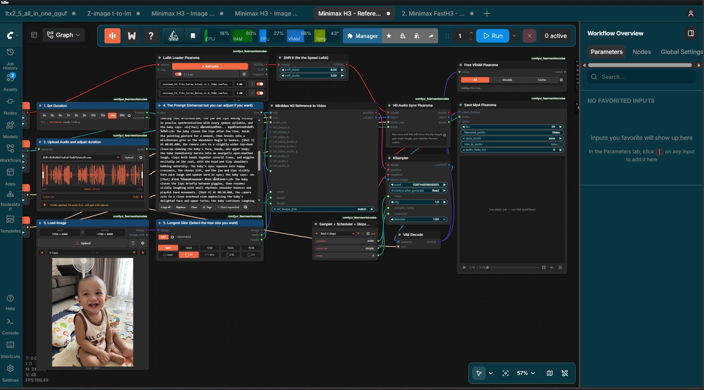

นายรังษิกร สิงห์ไธสง
(Mean)
Industrial Engineer -X- Generative AI Specialist
สำเร็จการศึกษาวิศวกรรมศาสตรบัณฑิต (วศ.บ.) สาขาวิศวกรรมอุตสาหการ มหาวิทยาลัยบูรพา มีความเชี่ยวชาญทั้งหลักการปรับปรุงกระบวนการผลิต (Continuous Improvement / Kaizen การันตีด้วยรางวัลอันดับ 3 จาก Essilor) และเทคโนโลยีปัญญาประดิษฐ์ยุคใหม่: ออกแบบ Workflow สร้าง Text, Image, Video, Music บน ComfyUI พร้อมทักษะการประยุกต์ใช้ AutoGPT และ VS Code ในการ Automate งานจริง
คุณรังษิกร สิงห์ไธสง
ขอนแก่น, ประเทศไทย (พร้อมทำงาน)
Core Competencies
ทักษะ & ความเชี่ยวชาญ
การผสานองค์ความรู้ด้านวิศวกรรมการผลิตแบบดั้งเดิม เข้ากับเครื่องมือ Generative AI สมัยใหม่
Generative AI & Agents
การสร้างสรรค์สื่อครบวงจรและระบบอัตโนมัติ
-
ComfyUI Mastery: ออกแบบ Node Workflow สร้างครบทั้ง 4 มิติ (Text Prompting, Image Generation, Video Diffusion, AI Music Synthesis)
-
AutoGPT: ใช้งาน Autonomous AI Agents วางแผนและสั่งรัน Task อัตโนมัติ
-
VS Code & Scripting: จัดการสภาพแวดล้อม พัฒนาโค้ดเบื้องต้นเพื่อเชื่อมโยง AI Tools
-
AI Automation: ลดระยะเวลาการทำงาน Creative & Operations ด้วย AI Pipelines
Industrial Engineering
การเพิ่มประสิทธิภาพและระบบคุณภาพโรงงาน
-
Continuous Improvement (CI): วิเคราะห์ Process และคอขวดเพื่อลดความสูญเปล่า (Waste Elimination)
-
Kaizen: คิดค้นไอเดียปรับปรุงหน้างาน (การันตีรางวัลชนะเลิศอันดับ 3 จาก Essilor)
-
7 QC Tools & Statistical Analysis: ควบคุมคุณภาพและประมวลผลข้อมูลสถิติ
-
Line Balancing & Metrology: จัดสมดุลสายการผลิต และการสอบเทียบเครื่องมือวัดทางกล
Engineering Software & CAD
การออกแบบวิศวกรรมและซอฟต์แวร์สนับสนุน
-
CAD/CAM Tools: AutoCAD, SolidWorks, FeatureCAM (ออกแบบชิ้นงานและจำลองการผลิต)
-
Automation & Control: Basic PLC (Programmable Logic Controller)
-
Creative Editing: Adobe Photoshop (ตัดต่อ ตกแต่งภาพ Retouching)
-
Data & Productivity: Microsoft Excel (คำนวณสูตรและสถิติ), Word, PowerPoint
ComfyUI Multi-modal Capabilities
ทักษะการสร้างสรรค์คอนเทนต์ 4 เสาหลักด้วย Node-based Generative AI
High-fidelity Image Synthesis
ควบคุมการเรนเดอร์ภาพด้วย ComfyUI Node Graph: เชื่อมต่อ Checkpoint Models, VAE, IP-Adapter, LoRA และ ControlNet ทำให้สามารถ Generate ภาพที่มีองค์ประกอบและ Lighting ตามความต้องการได้อย่างแม่นยำสูง

Career & Track Record
ประสบการณ์ทำงาน & ผลงานจริง
การทำงานในสถานประกอบการอุตสาหกรรมชั้นนำ การฝึกงาน และรางวัลการันตีคุณภาพ
เจ้าหน้าที่ห้องปฏิบัติการ ระดับ 1 (Laboratory Officer Level 1)
ปฏิบัติงานในห้องปฏิบัติการสอบเทียบมาตรฐานอุตสาหกรรม:
- งานปฏิบัติการสอบเทียบเครื่องมือวัดทางด้าน Mechanical (ทางกล) เพื่อให้เป็นไปตามมาตรฐานการสอบเทียบ
- งานบริการลูกค้า: รับ-ส่งงานสอบเทียบ ประสานงานและจัดทำรายงานผลการสอบเทียบให้กับลูกค้าอุตสาหกรรม
รางวัล Kaizen 8G : นวัตกรรมป้องกันการเติมซองผิด
คิดค้นและนำเสนอข้อเสนอแนะในการปรับปรุงกระบวนการทำงานจริงในหัวข้อ "ป้องกันการเติมซองผิด" ผ่านการประยุกต์ใช้หลักการ Poka-Yoke / Kaizen เพื่อลดข้อผิดพลาดในสายการผลิต ช่วยลดของเสียและเพิ่มความถูกต้องของผลิตภัณฑ์
นักศึกษาฝึกงาน ฝ่าย Continuous Improvement (CI)
ฝึกงานในส่วนงานพัฒนาและปรับปรุงกระบวนการอย่างต่อเนื่อง:
- ศึกษาและจัดทำ Line Balancing เพื่อลด Cycle Time ในสายการผลิตเลนส์สายตาระดับโลก
- ใช้เครื่องมือ 7 QC Tools และสถิติวิศวกรรมในการวิเคราะห์หาสาเหตุของ Defect ในโรงงาน
- จัดทำกิจกรรม Kaizen 8G และสื่อสารเพื่อสร้างวัฒนธรรม Continuous Improvement
วิศวกรรมศาสตรบัณฑิต (วศ.บ.) สาขาวิศวกรรมอุตสาหการ
ศึกษารวม 151 หน่วยกิต ครอบคลุม: การเขียนโปรแกรมคอมพิวเตอร์สำหรับวิศวกรรม (เกรด B), การวิจัยการดำเนินงาน (Operation Research เกรด A), การจัดการทางวิศวกรรม (เกรด A), กรรมวิธีการผลิตและเขียนแบบการผลิต (เกรด A), สถิติวิศวกรรม (เกรด B+), การออกแบบผังโรงงาน และระบบสนับสนุนการตัดสินใจ
Official Documents
เอกสารอ้างอิงและใบรับรอง
ข้อมูลและเอกสารทางการที่สามารถตรวจสอบและยืนยันประวัติการทำงานได้
เกียรติบัตร Kaizen 8G
หัวข้อ "ป้องกันการเติมซองผิด" จาก Essilor Optical Laboratory
คลิกเพื่อดูรายละเอียด →บริษัท บูรพา เมโทรโลยี ซิสเต็ม
ตำแหน่ง เจ้าหน้าที่ห้องปฏิบัติการ ระดับ 1 ด้าน Mechanical
คลิกเพื่อดูรายละเอียด →บริษัท เอสซีลอร์ ออพติคอล
ฝ่าย Continuous Improvement (CI) นิคมฯ อมตะนคร
คลิกเพื่อดูรายละเอียด →หนังสือรับรองวุฒิการศึกษา
วิศวกรรมศาสตรบัณฑิต สาขาวิศวกรรมอุตสาหการ (GPA 2.82)
คลิกเพื่อดูรายละเอียด →พร้อมร่วมงานสร้างสรรค์นวัตกรรมใหม่
ต้องการวิศวกรที่มีความเข้าใจทั้งกระบวนการทำงานแบบ Lean/CI และทักษะ Generative AI ยุคใหม่ เพื่อเพิ่มผลผลิตให้กับองค์กร ติดต่อผมได้ทันทีครับ